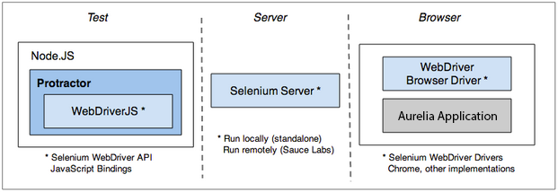

{ "name": "End-to-End Testing", "culture": "en-US", "description": "Testing front-end applications has become an important task for today's developers. Not only do you want to ensure that your application's internal code operates correctly, but you also want to validate the in-browser behavior. This article will show you how to achieve this by combining Aurelia and Protractor.", "engines" : { "aurelia-doc" : "^1.0.0" }, "author": { "name": "Vildan Softic", "url": "https://github.com/zewa666" }, "contributors": [], "translators": [], "keywords": ["Testing", "E2E", "Protractor"]
End-To-End (E2E) testing is all about testing your application against specific scenarios. From a requirements-engineering-perspective you'd call those User Stories. Essentially, these stories describe a series of actions a user performs to achieve a certain goal. So by assembling a bunch of these - referred to as a test suite - you are able to verify that your web app acts as expected. The key to success, of course, lies in the amount and quality of tests written.
With E2E testing you are not interacting with the app's code per se, but with the app's interface. This is different than unit tests, which take care of isolated parts of the application - called units - by verifying them through the removal or mocking of other parts. It's important to note that one method of testing does not replace the other, so don't take this article as an excuse to skip unit testing.
One of the key differences when working with E2E tests is that all of your work is located in the browser, which naturally leads to writing a lot of asynchronous code. It doesn't matter whether you request a DOM Element, send some fake keystrokes or trigger a click, each of these actions needs to be automatically translated to understandable instructions and sent to the browser under test. So working with Promises becomes a major enabler when keeping track of deferred executions and responses.
Another important aspect already noted is the necessity to translate programmatic actions into browser understandable ones. Needless to say, variations exist between the different browsers...
When performing E2E tests you also need to take into consideration that you are actually testing a real web page. So, compared to unit tests, you will additionally need your web page up and accessible by the browser during test execution. Keep in mind that E2E tests, sometimes also referred to as integration tests, test your app's system as a whole. Thus, modifications which get persisted to databases or local storage will stay that way and may produce side effects for your next test run.
Last but not least, there is a much higher test code maintenance cost, compared to unit tests. The reason is that now, not only one component is tested exclusively, but rather the whole system at once. Imagine trying to fill out an input element with the id txtFirstname, just to realize the next day your tests fail because your fellow front-end designer decided to change the name to txtFirstName. This makes it clear that you must treat your test code like general application logic and give it all the love it deserves.
Although the previous section may sound depressing, there is hope for developers in Protractor, an End-To-End testing framework. Under the hood it's actually a Node.js application, which supports a wide variety of assertion/test libraries like Jasmine, Mocha or Cucumber.
Info: Jasmine The remainer of the article will use the BDD Testing Framework Jasmine. A nice tutorial on how to use Jasmine can be found here.
Protractor acts as a wrapper on top of the WebDriverJS-API, which is used to communicate with a Selenium Server, either local (standalone) or remote. The picture below depicts the whole process. Protractor communicates via the WebDriverJS-API (the way to talk to Selenium's WebDriver API) which is used to translate user interactions into browser understandable instructions.

Now the interesting thing is that instead of manually testing your application in each of the major browsers, automated Protractor tests can run on multiple browsers at the same time, saving you valuable time and money. Support is wide-spread and even includes headless browsers like PhantomJS.
Besides that, being a wrapper, it offers additional convenience features, not present in the vanilla WebDriverJS-API. One feature, perhaps the most important, is that it allows you to write asynchronous tests in a synchronous style. This means that Protractor will automatically execute the next task, the moment the previous pending tasks finish.
To get a basic idea of how this works, take a look at the following example.
As you can see, the test utilizes Jasmine for BDD style testing which is placed in a separate JavaScript file and defines a scenario/suite by using a describe block. Each test then gets handled by a separate it function. In this one we'd like to verify that after loading the Aurelia Homepage, the title equals our expected page title. The first line will issue a general browser method get which loads the given URL. This function now returns a promise, to which you'd normally append a then function, which gets called after the promise successfully resolves. In this test case though, we don't need to care about that, because Protractor will execute the expectation only after the previous line has successfully resolved. Protractor also adapts the Jasmine expectations to work in an async way, so by the time matchers like toEqual are called, the previous expectation is already resolved.
But sometimes you need to wait for a certain action to happen in the future. Again we can leverage the general browser object and utilize it's sleep method.
Great! So we know how to load a page. But how do we find DOM Elements and see whether they are rendered properly? Protractor provides the global object element, an ElementFinder, which offers a locator factory by used to define a way to search for elements. Let's take a look at the following example.
it('should have proper header text set', () => {
expect(element(by.tagName('h2')).getText()).toBe('EXPECTED HEADER');
});
it('should find an about section', () => {
expect(element(by.id('about')).isPresent()).toBe(true);
});
});
The first test is looking for an <h2> tag by utilizing the tagName locator. The second test looks for an element with the ID about and expects it to be rendered on the page. Here we use the isPresent method, provided by the ElementFinder.
You may have noticed the method beforeEach at the top of the describe block. This is a setup method, which will get called before each test in the current describe block. To perform tear down operations, you'd simply define a function afterEach, which gets called after each test.
Info: Protractor Locators You can find a full list of locators here. Just keep in mind that everything specific to AngularJS, like
bindingormodelwon't work with Aurelia Apps. We have our own helpers for that.
Now we know how to work with general elements, but what about inputs? Wouldn't it be nice to fake data entries in order to verify the logic of a form? To do so, let's look at the next example. Our test will navigate to the Google homepage, search for a specific keyword, trigger the search and expect to see an element containing the given value.
it('should load page', () => {
element(by.name('q')).sendKeys('Aurelia');
element(by.name('btnG')).click();
browser.sleep(2000);
expect(element(by.css('h3 a')).getText()).toContain('Aurelia');
});
});
First we navigate to the page using browser.get and look for an input with the name q. The sendKeys method now simulates the keystrokes for the keyword Aurelia. Afterwards we perform a search by clicking the button named btnG. Now we need to wait for Google to perform the search and render the result. We therefore leverage the browser.sleep method to give it some time. Finally we look for a link containing the word Aurelia.
In order to work with Protractor, there is a little configuration that is necessary. This is done in a configuration file, e.g. protractor.conf.js, which sets up the basic information for Protractor so it can find our test files, start the standalone Selenium server and wire up the JasmineOptions for the console output. The Aurelia Skeleton Navigation App thankfully already shares a pre-configured setup. Let's take a look at it.
// Capabilities to be passed to the webdriver instance.
capabilities: {
'browserName': 'chrome'
},
//seleniumAddress: 'http://0.0.0.0:4444',
specs: ['test/e2e/dist/*.js'],
plugins: [{
path: 'aurelia.protractor.js'
}],
// Options to be passed to Jasmine-node.
jasmineNodeOpts: {
showColors: true,
defaultTimeoutInterval: 30000
}
};
The first setting tells Protractor to directly connect to the Browser leveraging its WebDriver, in this case, Chrome, defined by the capabilities property. By doing so, Protractor won't need a Selenium Server and will talk directly to the mentioned Browser.
The method plugins points to the Aurelia specific implementation of custom matchers and helpers and sets those up before Protractor starts. One of them is the valueBind custom locator, which searches for Aurelia value bindings.The option seleniumAddress now may be omitted since we are using directConnect. It typically would point to a remotely running Selenium instance, helpful in remote testing scenerios.
The property specs takes the path to our spec files. Since Aurelia is built from ground up with full support for ES6, we encourage developers to write their tests using ES6 features.
Since we'd like to start tests only when Aurelia is fully loaded, we leverage another plugin method called loadAndWaitForAureliaPage.
This helper uses a Protractor feature to listen for a DOM event fired by Aurelia after initial view composition. By placing this in a beforeEach section, we ensure that none of the tests will be started before the async script successfully finishes.
Besides having the configuration file set up, the Skeleton Navigation App also defines a set of demo tests to help you get started with testing your own page. First you'd need to download the App directly from our Github-Repo and follow the installation instructions. Afterwards, in order to start E2E testing, simply open up a console and run the following command to start up the built-in web server:
After that, open another console and hit the following command to start up the E2E test run:
You will find the demo spec in the folder test/e2e/src/.
To conclude this article we're going to quickly look at how to structure tests. We organize our test methods using a pattern called Page Objects (POs). What this means is that you try to group information about how you access parts of the application into a separate class. This makes it simple to access specific elements multiple times. Now instead of repeating the element.by.xxx code over and over across multiple tests, we unify the access, making it easier to maintain and modify.
Since Aurelia promotes the use of ES6, our page objects are simple ES6 classes, exposing functionality through methods. These methods contain the logic for how to interact with Protractor. The following example shows our main Skeleton PO, which takes care of general application information like the page title and page navigation.
navigateTo(href) {
element(by.css('a[href="' + href + '"]')).click();
return browser.waitForRouterComplete();
}
}
One notable thing is the usage of the Aurelia specific function waitForRouterComplete. It will wait for a custom DOM event dispatched by Aurelia's router to determine, when the page has been fully loaded and displayed.
The second PO is all about the Welcome page.
setFirstname(value) {
return element(by.valueBind('firstName')).clear().sendKeys(value);
}
setLastname(value) {
return element(by.valueBind('lastName')).clear().sendKeys(value);
}
getFullname() {
return element(by.css('.help-block')).getText();
}
pressSubmitButton() {
return element(by.css('button[type="submit"]')).click();
}
openAlertDialog() {
return browser.wait(() => {
this.pressSubmitButton();
return browser.switchTo().alert().then(
function(alert) { alert.accept(); return true; },
function() { return false; }
);
});
}
}
The previously defined page objects can now be imported into our test specification by leveraging the ES6 import syntax. Using beforeEach we can instantiate the POs, navigate to the Web app and wait for the previously mentioned aurelia-composed event to start testing.
Our page object methods, in combination with Jasmine's BDD style assertions, make each test become an easy to read English sentence.
describe('aurelia skeleton app', () => {
let poWelcome;
let poSkeleton;
beforeEach(() => {
poSkeleton = new PageObjectSkeleton();
poWelcome = new PageObjectWelcome();
browser.loadAndWaitForAureliaPage('http://localhost:9000');
});
it('should load the page and display the initial page title', () => {
expect(poSkeleton.getCurrentPageTitle()).toBe('Welcome | Aurelia');
});
it('should display greeting', () => {
expect(poWelcome.getGreeting()).toBe('Welcome to the Aurelia Navigation App!');
});
it('should automatically write down the fullname', () => {
poWelcome.setFirstname('Rob');
poWelcome.setLastname('Eisenberg');
browser.sleep(200); // wait for async bindings to complete
expect(poWelcome.getFullname()).toBe('ROB EISENBERG');
});
it('should show alert message when clicking submit button', () => {
expect(poWelcome.openAlertDialog()).toBe(true);
});
it('should navigate to users page', () => {
poSkeleton.navigateTo('#/users');
expect(poSkeleton.getCurrentPageTitle()).toBe('Github Users | Aurelia');
});
});
We hope you enjoyed this introduction to E2E Testing with Protractor and the Aurelia Framework. Time to start writing some tests!